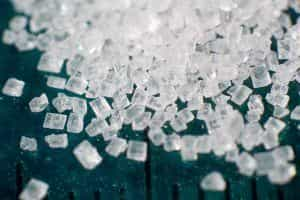
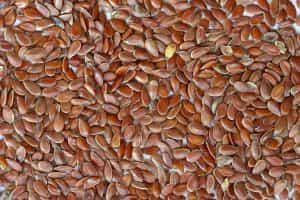
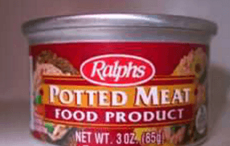

A few weeks ago, I discussed soy, its byproducts and how that vegetable has negative, estrogenizing effects upon the masculine physique. Naturally, nothing has changed in those few weeks: soy is still rightfully stigmatized by men.
Having said that, let’s make something perfectly clear: soy is not the only food that can sap your masculine vigor—far from it! As you probably assumed, this article will deal with four estrogenizing foods other than the hated soybean, and why you should avoid them.
1. Beer
“Beer?!” you might ask. Yes beer, of all things, has been shown to be estrogenizing. More specifically, not all beers but just certain types of beer—those that are brewed with hops, which is to say the overwhelming majority of the beers you can find on the market.
Of course, beer is very fattening, hence the term “beer belly”, but it goes beyond that. Hops contain phytoestrogens, which are found in (you guessed it) soy as well! If that wasn’t bad enough, it could concurrently lower your testosterone levels as well.
This effect can be somewhat ameliorated if you drink beer that is not made with hops—malt extract, fruit, corn, the permutations of alcohol are many, and if you must have an alcohol kick, you can probably find something other than hops.
“But beer is a manly thing!” Some who refuse to curb their drinking are probably saying that right now. Says who? The media, of course! That same media that is doing everything in its power to denigrate masculinity 90% of the time. Am I the only one who finds that suspicious?
2. Processed Sugar

In reality, any sort of high carb diet is estrogenic, but this is the worst. In fact, according to some research, eating too much sucrose and fructose can have an epigenetic effect in causing dysfunction of the regulation of sex hormones.
Naturally, this effect occurs whether you eat high fructose corn syrup or sugar, but I specify “processed sugar” because of the sheer preponderance of it in the modern diet. You should already be avoiding food that’s high in sugar purely to avoid giving yourself a dad bod, and this is just another reason for that prohibition.
And in a manner of speaking, what is the above beer if not just liquid simple carbohydrate? The verdict is in: avoid excess carbohydrate consumption!
3. Flax

“What the hell is flax?” most of you are probably asking. “How do you eat the stuff they make linen out of?” the slightly more knowledgeable may inquire. It may surprise you but flax (or more accurately flax seeds) are found in a fair amount of food—including whole grain bread and cereals. And to be clear, they’re not all bad: they are one of the predominant vegetable sources of those valuable omega-3 fatty acids that are good for the central nervous system. However, that comes with a trade off in the form of lignans, a chemical compound with estrogenic properties.
Flax seems to be the least harmful of the foods on the list, so if you are in need of omega-3 acids, a small amount of flaxseed or flaxseed oil can’t be too bad in limitation
4. Processed Animal Products

While I have repeatedly stated that animal products are some of the best things you can eat—and I stand by that—I should make a very clear distinction between healthy and unhealthy animal products.
The vegans do have a point about one thing: factory farming and similar processes aren’t good for anybody. Not only are they abominably cruel to the animals themselves, the sheer amount of hormones and other chemicals they give to the animals when they’re alive (to get increased meat, milk, and egg yields) are not good for your health. And neither are the preservatives you’ll find in various processed meats.
Say what you will about the European Union, they just might have a point in banning American beef and milk for import—and the fact that the US has much higher obesity rates would probably illustrate that fact.
The worst part of it all is that the estrogenic effects are probably the most mild effect of all the farm-related hormones: increasing rates of cancer, heart disease, and metabolic syndrome are also associated with said hormones, to name a few.
Read More: Four Super Foods and Their Effectiveness